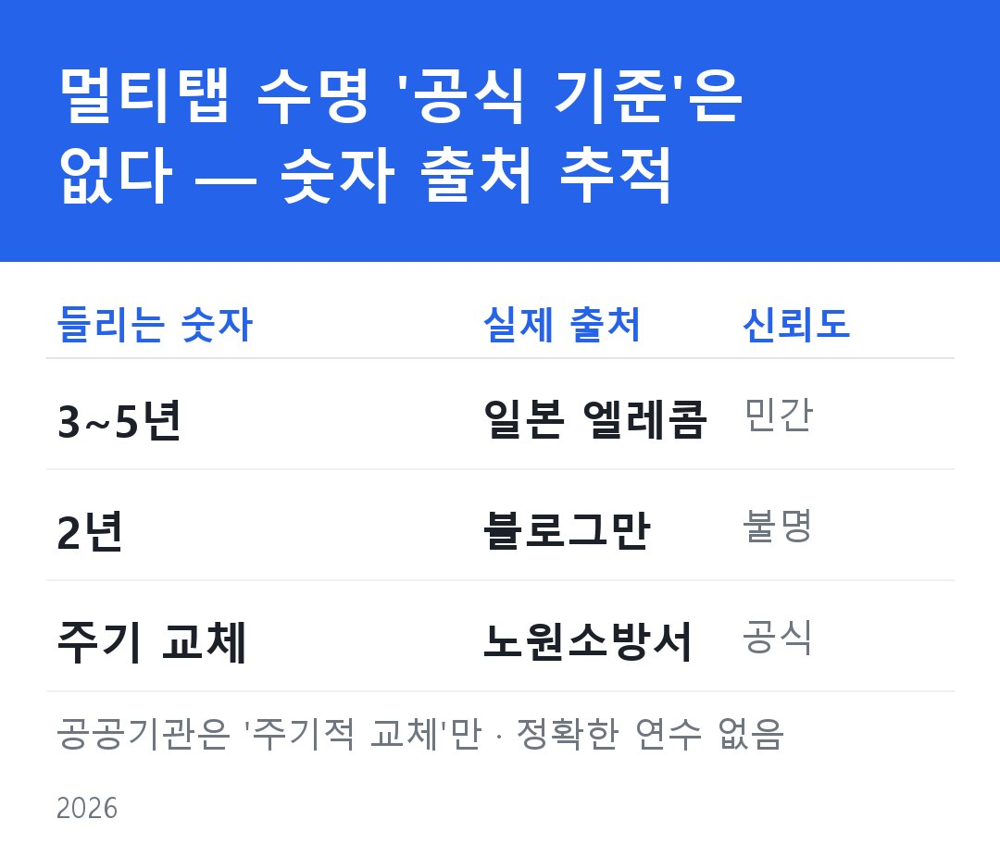

멀티탭 수명 2년? 3~5년? — 언제 바꾸고 뭘 사야 하나
멀티탭 수명·교체·안전 완전정리 — 언제 바꾸고, 뭘 사야 하나
"멀티탭 몇 년 썼어요?" 물으면 대부분 "글쎄요…"로 시작한다. 뒤집어서 제조연월을 확인하는 사람은 거의 없다. 그런데 검색하면 "2년마다 교체", "3~5년이 권장 수명"이라는 글이 넘쳐난다. 이 숫자들이 어디서 왔는지, 내 멀티탭이 진짜 안전한지, 새로 살 땐 뭘 봐야 하는지 — 흩어진 정보를 한자리에 정리했다.
먼저, 공식 교체주기는 없다
결론부터. 한국 공공기관이 "멀티탭은 O년마다 바꾸세요"라고 명시한 공식 문서는 확인되지 않는다. 한국전기안전공사와 소방청 어디에도 구체적 권장 연수가 명문으로 없다.
그럼 흔히 들리는 숫자들은 어디서 왔을까.
| 숫자 | 실제 출처 | 등급 |
|---|---|---|
| 3~5년 | 일본 업체 엘레콤(ELECOM) 제품 안내. 경향신문(2026-06-07)이 인용하며 확산 | 🟡 일본 민간기업 권고 |
| 2년 | 블로그·티스토리가 "소방청·전문가 공통"이라 주장하나 소방청 원문에 확인 불가 | 🔴 블로그만 유통 |
| "주기적 교체" | 노원소방서 "안전사용 5대 수칙" — 연수는 없고 "주기적 교체"만 | 🟢 공식, 단 연수 없음 |
공공기관이 일관되게 말하는 건 "오래된 멀티탭은 위험하니 주기적으로 교체하라"이지 "정확히 2년/5년"이 아니다. "3~5년"은 일본 기업 안내가 보도로 퍼진 값, "2년"은 블로그에서만 자가 증식한 값이다.

즉 햇수를 믿을 게 아니라 눈앞의 상태로 판단해야 한다. 그리고 애초에 오래 안전하게 쓰려면 잘 사는 것이 절반이다. 그런데 상태가 나빠지는 원인을 모르면 신호를 놓치고, 뭘 사야 안전한지 모르면 또 같은 실수를 반복하게 된다. 아래에서 이 흐름을 하나의 선으로 짚는다: 왜 상태로 봐야 하는가 → 상태를 해치는 건 무엇인가 → 그래서 새로 살 땐 무엇을 확인해야 하는가.
왜 상태로 판단해야 하나 — 교체 신호를 놓치면 안 되는 이유
멀티탭은 쓸수록 내부가 마모되고, 그 마모는 겉으로 잘 드러나지 않는다. 플러그가 헐거워지고, 탄 냄새가 나고, 꽂는 곳 주변이 갈변하고, 본체가 뜨거워지고, 불꽃이 튀고, 구멍에 먼지가 쌓이는 현상 — 이 일곱 가지 신호 중 하나라도 감지되면 이미 늦기 직전이다. 뒷면 제조연월 스탬프를 확인해 내 멀티탭이 몇 살인지 아는 것도 중요하지만, 햇수보다 이 신호들이 더 정확한 판단 기준이다. (→ "멀티탭 교체 시기" 글)
이 신호들이 위험한 이유는 하나로 귀결된다: 열. 소방청 집계 3년간 멀티탭 관련 화재 931건의 4대 원인 — 과부하·트래킹·접촉불량·문어발 — 은 전부 '열이 쌓이는' 과정이다. 만졌을 때 따뜻하다면 그건 이미 교체 신호다. (→ "멀티탭 화재 원인" 글)
그래서 뭘 사야 하나 — 인증·기능·용량·제조국
열이 문제라면, 새 멀티탭을 살 때 그 열을 막아줄 장치가 있는지가 핵심이다. 네 가지를 확인하면 충분하다.
첫째, 인증 마크. KC는 법적 최소 의무(없으면 불법), KS는 자율 품질 인증이다. 시중엔 KC만 대부분이라 KS가 붙으면 강력한 변별 신호가 된다. (→ "KC·KS 차이" 글)
둘째, 차단기. "차단장치 내장" 표기만으로는 소용없다. 테스트 버튼을 눌렀을 때 눈에 보이게 작동하는 제품인지가 실질 기준이다. (→ "멀티탭 차단기" 글)
셋째, 허용전력. "4000W" 멀티탭이 4000W를 버텨준다고 착각하면 안 된다. 벽면 콘센트(3,520W)가 먼저 한계에 닿는다. 정격의 80%까지만 사용해야 한다. (→ "멀티탭 허용전력" 글)
넷째, 제조국. "국산 브랜드"와 "국산 제조"는 다르다. KC 안전인증번호를 조회하면 30초 안에 제조국까지 확인할 수 있다. (→ "국산 멀티탭 확인법" 글)
마지막으로, 에어컨·전자레인지·드라이어 같은 고전력 가전은 애초에 멀티탭 대상이 아니다. 벽면 콘센트에 직접 꽂는 것이 원칙이다. (→ "고전력 가전 멀티탭" 글)
한 줄 정리: 멀티탭은 공식 수명이 없다. 햇수 말고 상태(7가지 신호)로 판단하고, 새로 살 땐 KS·눈에 보이는 차단·정격 80%·제조국을 확인하라. 화재 4대 원인의 뿌리는 전부 '열' 하나다.